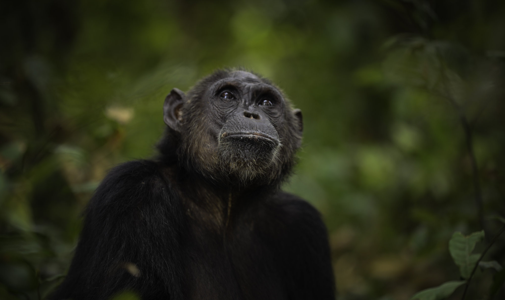

Trip Details
•
Departing from Kigoma
4-Day Gombe Chimpanzees & Kigoma Culture

Go straight from Kigoma to the forest made famous by Dr. Jane Goodall. Spend two nights in Gombe Stream National Park trekking with wild chimpanzees, then return to Kigoma to explore its history and culture, from the Ujiji slave trade route and the legendary MV Liemba to a visit with coffee farmers and the Ha people. Accommodation, meals, snacks, non-alcoholic drinks and transport are all taken care of.
Itinerary
-
Day 1: Arrival in Kigoma and Boat to Gombe
- Arrive in Kigoma and meet your guide.
- After arrival, board the boat for a scenic ride across Lake Tanganyika, passing fishing villages and forested hills.
- Arrive at Gombe Stream National Park, check in and settle in.
- Lunch or dinner, depending on arrival time, followed by a park briefing on chimpanzee behavior, trekking rules and what to expect.
- Free time to relax on the lake beach or take a gentle walk near camp
- Dinner and overnight in Gombe.
-
Day 2: Main chimpanzee trek
- Early breakfast, then set off with your ranger and guide into the forest.
- Follow the trails through steep valleys and dense rainforest to find a chimpanzee community, and spend time watching them feed, groom, play and interact. You may also spot red colobus monkeys, baboons and colorful birds.
- Return to camp for lunch and rest.
- Afternoon at leisure: swim in the lake, relax on the beach, or take an optional short walk to the waterfall.
- Dinner and overnight in Gombe.
-
Day 3: Short trek and return to Kigoma
- Breakfast at camp, then one more short trek for a final chance to see the chimpanzees.
- Return to camp, pack up and have lunch.
- Board the boat back to Kigoma and check in to your hotel.
- Relax, then enjoy sunset by Lake Tanganyika.
- Dinner and overnight in Kigoma.
-
Day 4: Kigoma Town Tour and Rural Tour (Coffee and the Ha People)
- Breakfast at the hotel, then set off with your guide.
- Kigoma town tour (morning):
- Ujiji slave market route: Walk the historic trail through Ujiji, once the end of the 19th-century caravan routes and a major hub of the East African slave trade.
- MV Liemba: See this famous steamship, built in Germany in 1913 and still sailing Lake Tanganyika today.
- Livingstone Memorial and museum in Ujiji, where Stanley met Dr. Livingstone in 1871.
- Ujiji harbour, to see fishermen and traditional boat builders at work.
- Rural tour (late morning to afternoon):
- Coffee tour: Visit a local farm and see how coffee is grown, harvested, dried and processed, finishing with a fresh cup made from the beans.
- Cultural experience with the Ha people: Meet the community and learn about their history, farming traditions and customs.
- Enjoy a local lunch in the village.
- Return to Kigoma for transfer to the airport, station or bus stand. End of services.
Included
- check_boxAccommodation in Gombe (2 nights) and Kigoma (1 night)
- check_boxAll meals, snacks and non-alcoholic drinks(water, soft drinks, tea and coffee)
- check_boxBoat transfers Kigoma to Gombe and back
- check_boxGround transport during the tours
- check_boxKigoma town tour, including the Ujiji slave market route and MV Liemba
- check_boxRural tour with coffee experience and Ha cultural visit
- check_boxGuided chimpanzee treks with a ranger and guide
- check_boxPark entry and conservation fees
Not included
- cancelAlcoholic drinks
- cancelFlights or transport to and from Kigoma
- cancelPersonal expenses, tips and travel insurance
Other trips
3-Day Gombe Chimpanzee Trek
3 days · $888 USD per person
Gombe Field Discovery
3 days, 2 nights, up to 8 guests · $2,950 USD per person
University Field School
7 days, 6 nights, up to 14 guests · $3,950 USD per person
Gombe Field Expedition
10 days, 9 nights, up to 12 guests · $4,950 USD per person
Experts Signature Expedition
10 days, 9 nights, up to 10 guests · $5,500 USD per person